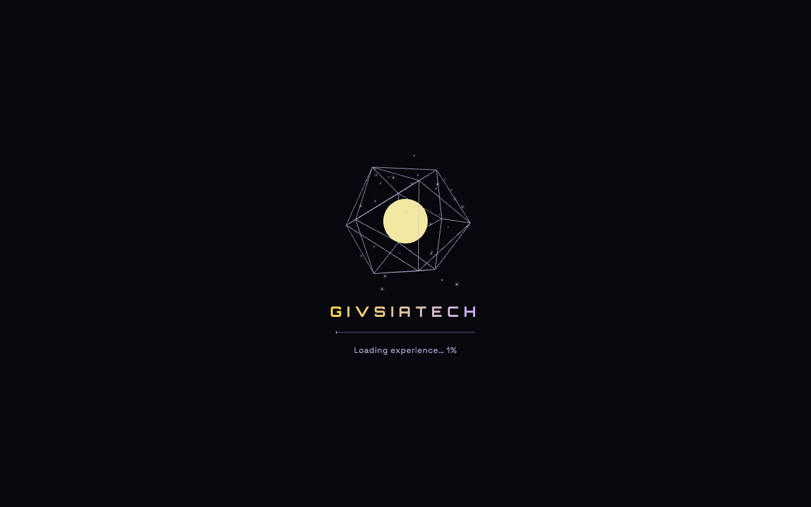
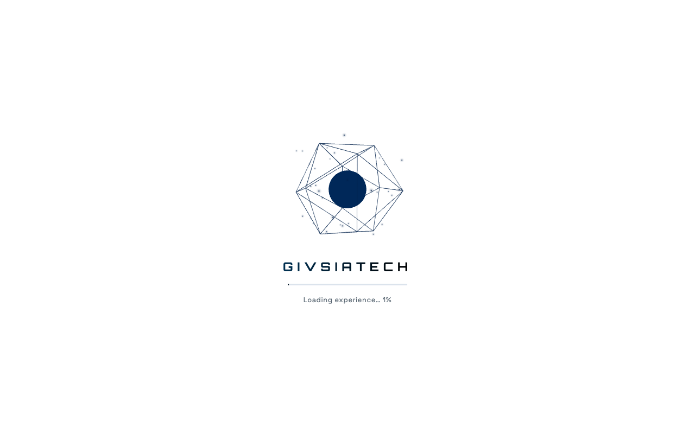
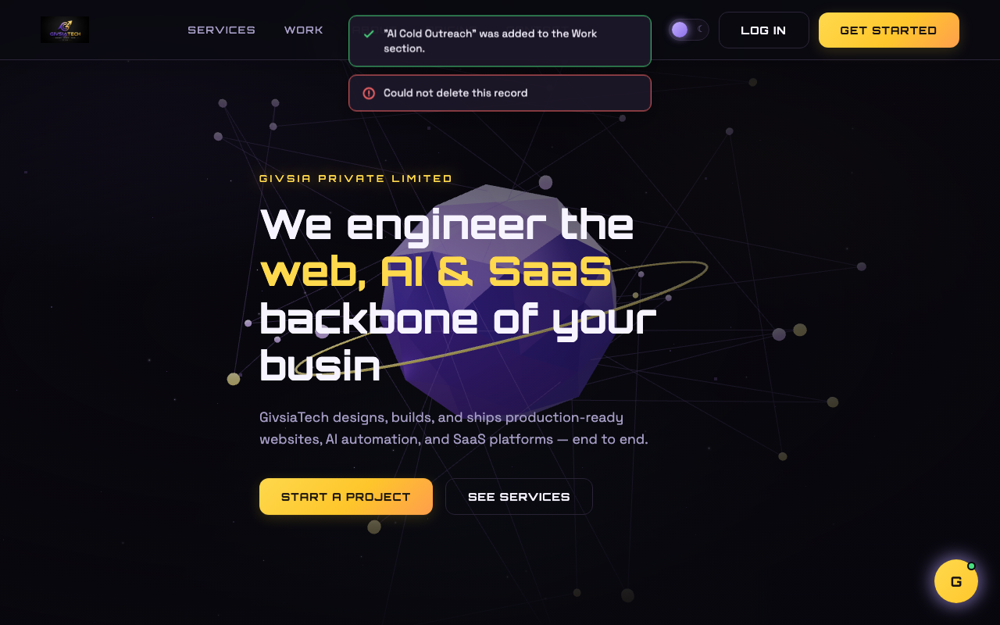
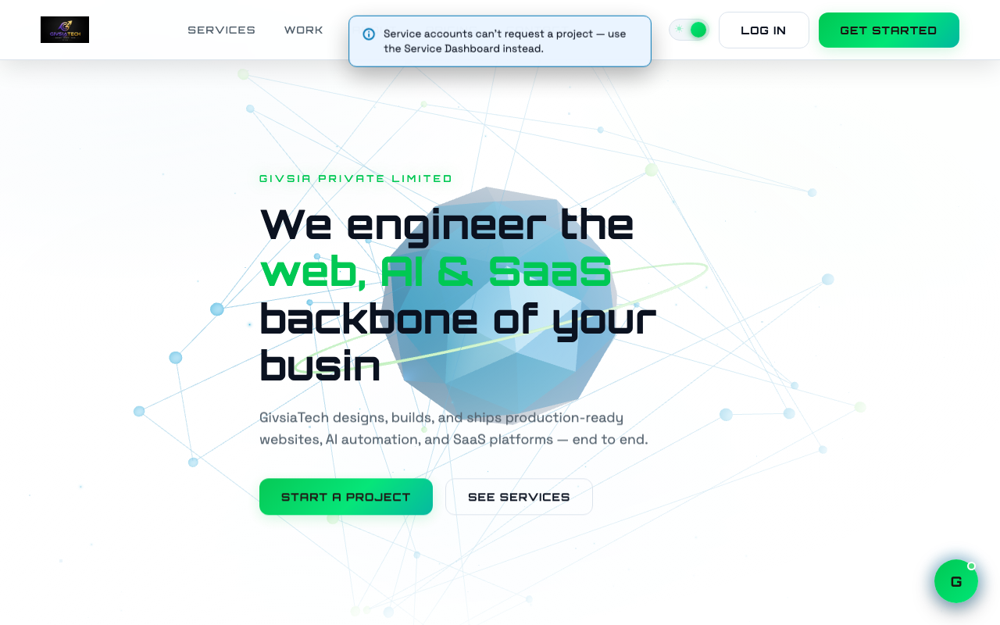
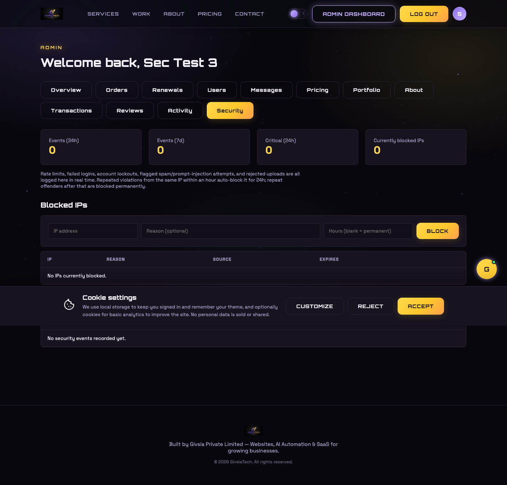
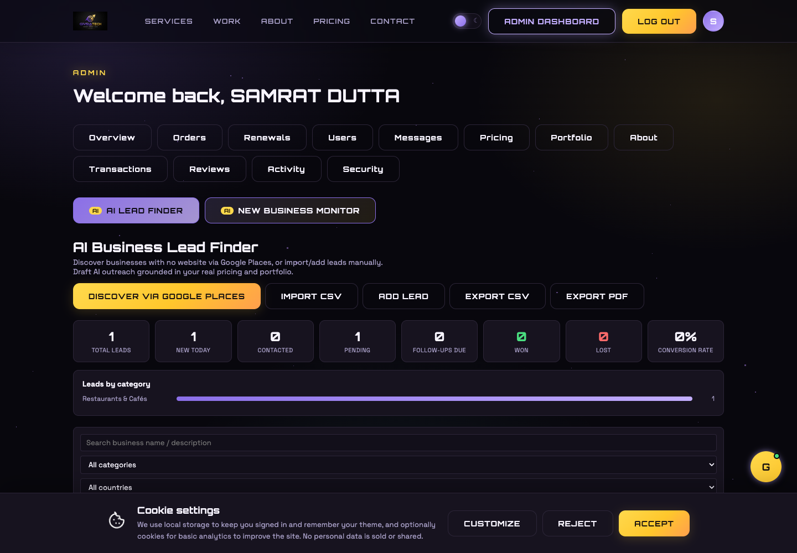
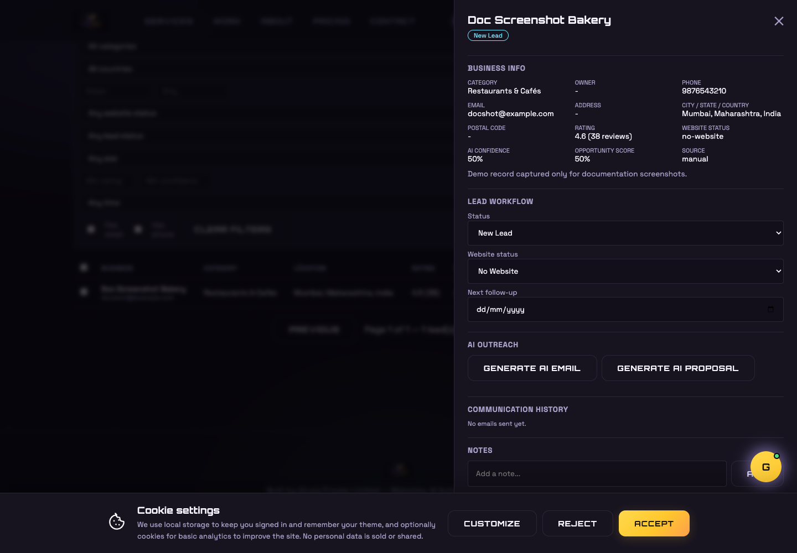

01 Givi chatbot — site-wide Q&A + refresh
backend/routes/chatRoutes.js frontend/GiviChat.jsxRequest: make Givi answer questions about any section of the site using real backend data, without ever leaking personal/protected details, add a refresh (new conversation) button, quick-suggestion chips, and a stronger, more attractive interface.
What changed
buildKnowledgeContext()pulls live Pricing, Portfolio, and CompanyInfo documents from MongoDB into the system prompt so Givi answers from real data instead of inventing facts.- A
HARD RULEblock in the system prompt permanently forbids revealing accounts, emails, phone numbers, credentials, orders/payments, invite codes, API keys, or any backend internals — this block was preserved verbatim through every later rewrite of the prompt. frontend/src/components/GiviChat.jsx: added a refresh/"new conversation" icon button, animated typing-dots indicator, quick-suggestion chips shown on a fresh conversation, and chat-bubble entrance animation.
Refresh button
const startNewChat = () => {
setMessages([GREETING]);
setInput("");
setLoading(false);
};02 Outreach history — delete option
backend/routes/outreachRoutes.js ServiceDashboard.jsxRequest: add a delete option on every row of the Service Dashboard's outreach history.
// backend/routes/outreachRoutes.js
router.delete("/:id", protect, authorize("service", "admin"), async (req, res) => {
const record = await Outreach.findOneAndDelete({ _id: req.params.id, sentBy: req.user._id });
if (!record) return res.status(404).json({ message: "Not found" });
res.json({ message: "Deleted" });
});Frontend calls DELETE /outreach/:id per row and shows a toast on failure (see §7).
03 Recurring port 5000 crashes
operationalThis error was reported and fixed roughly five separate times across the session:
Error: listen EADDRINUSE: address already in use :::5000
at Server.setupListenHandle [as _listen2] (node:net:1817:16)
...
at server.js:116Root cause: every time, it was a leftover background node server.js / nodemon
process from my own automated verification steps (started with &/disown during
Playwright testing) still holding port 5000, colliding with the user's own terminal-launched nodemon.
lsof -nP -iTCP:5000 -sTCP:LISTEN
ps aux | grep -E "nodemon|node server.js" | grep -v grep
# distinguish "no tty (??)" == mine, vs a real tty (s00x) == the user's own terminal
kill <my-orphaned-pids>
lsof -nP -iTCP:5000 -sTCP:LISTEN || echo "port 5000 free"The user's own nodemon process was always left untouched; they only needed to save a file or type
rs in their terminal to bring it back up once the port was free.
Manually diagnosing and killing the stale process every single time wasn't sustainable, so the port is now cleared automatically before the server ever tries to bind it — regardless of whose leftover process is holding it.
// backend/scripts/freePort.js
const port = Number(process.env.PORT) || 5000;
try {
await kill(port, "tcp"); // kill-port package
console.log(`[freePort] Cleared anything that was on port ${port}`);
} catch {
console.log(`[freePort] Port ${port} was already free`);
}// backend/package.json
"scripts": {
"predev": "node scripts/freePort.js",
"dev": "nodemon server.js",
"prestart": "node scripts/freePort.js",
"start": "node server.js"
}npm runs pre<script> automatically before the matching script, so every
npm run dev / npm start now self-heals with no manual intervention. Verified by
deliberately starting a second instance on top of a running one — it logged
[freePort] Cleared anything that was on port 5000 and started clean instead of crashing.
One caveat: this only runs at the start of an npm run invocation — a terminal already
sitting in nodemon's crashed "waiting for file changes" state from before this fix existed still
needs one manual rs to recover, since nodemon doesn't retry on its own just because the port
later became free.
04 WhatsApp integration — added, then fully removed
backend/utils/sendWhatsApp.js (deleted) Meta Cloud APIThis feature went through three stages in one session: WhatsApp OTP verification was built, then explicitly removed; a WhatsApp cold-outreach sender for the Service panel was built (with real Meta credentials configured live), then explicitly removed as well, leaving the Service panel email-only.
Stage 1 — WhatsApp OTP added, then removed
User: "Remove the whatsapp code verification system" — reverted /send-otp to SMS
(Twilio) with a dev-mode fallback code only.
Stage 2 — WhatsApp outreach added, then removed
User provided real Meta Cloud API credentials (phone number ID, business account ID, access token), which
were written to backend/.env and wired into backend/utils/sendWhatsApp.js and
outreachRoutes.js (the Outreach model's channel field supported
"email" | "whatsapp"). User then said: "Remove the whatsapp auto message sending system from
service panel."
backend/utils/sendWhatsApp.jsdeleted entirelyOutreach.channelfield removed — email-only from here on- WhatsApp env vars removed from
backend/.env/.env.examplewith explanatory comments ServiceDashboard.jsxsimplified back to a single email-send flow
05 "Start a project" — role-aware routing fix
frontend/src/pages/Home.jsx
Bug: the "Start a project" button always sent everyone to /register, regardless of whether they
were already logged in, and regardless of role.
"Whenever I click on start a project button it's not go to the project request section for client / not go to the project management in admin dashboard for admin / not showing can't request a project by service management in service account, after being logged in it's still go to the login page for all user."
// Home.jsx
const handleStartProject = () => {
if (!user) return navigate("/register");
if (user.role === "client") return navigate("/dashboard/client#request-project");
if (user.role === "admin") return navigate("/dashboard/admin?tab=orders");
if (user.role === "service") {
return showToast(
"Service accounts can't request a project — that's only available for clients. " +
"Use the Service Dashboard to send outreach instead.",
"info"
);
}
};ClientDashboard.jsx was updated with a #request-project anchor and a
useEffect that auto-opens and scrolls to that panel on load. AdminDashboard.jsx reads a
?tab= query param to jump straight to the Orders tab.
06 Electric-embossed OTP verification UI
frontend/src/components/OtpBoxes.jsx Register.jsxRequest: a themed 3D "electric embossed" 6-digit OTP box animation for phone verification during registration, matching separate dark/light color palettes from reference screenshots.
- New
OtpBoxes.jsx: 6 individual boxed digit inputs, auto-advance on type, backspace-to-previous, arrow-key navigation, full paste support (pasting a 6-digit code fills all boxes at once). Register.jsxreworked into 3 tabs (client / admin / service), OTP step now usesOtpBoxesfollowed by an animated checkmark reveal on success, replacing the old plain-text confirmation.- CSS: embossed glow / electric border-pulse styles added to
index.css, themed separately for dark and light.
07 3D loading screen
frontend/src/components/LoadingScreen.jsxRequest: a 3D loading animation shown on initial page load/refresh, later refined to use separate palettes per theme — "white for clear visibility" in dark mode, "dark prussian blue with black" in light mode.
A React Three Fiber wireframe crystal with a glowing core and a progress tween; a theme-aware PALETTE
object supplies literal hex colors (dark: lavender/yellow; light: prussian blue #003153/black) since
Three.js materials require real color values rather than CSS variables.
Bug: gradient text-clip silently broken by key ordering
Setting background (shorthand) on a style object after backgroundClip /
WebkitBackgroundClip (longhand) were already present as keys reset the gradient text-clip effect,
because background wasn't already a key in the base object and so landed after them in property
application order.
const baseStyle = {
background: undefined, // reserves this key's position ahead of backgroundClip
WebkitBackgroundClip: "text",
backgroundClip: "text",
...
};

08 Sitewide toast notifications (replacing window.alert)
frontend/src/context/ToastContext.jsx ToastStack.jsx
Request: replace every window.alert() across the site with small, non-intrusive, animated
top-of-screen toasts, themed for light and dark. In total, 16 call sites across Home.jsx,
ClientDashboard.jsx, ServiceDashboard.jsx, and 6 sub-components inside
AdminDashboard.jsx (Orders, Reviews, Users, Leads, Pricing, Portfolio tabs) were converted.
Core implementation
// ToastContext.jsx
const showToast = useCallback((message, type = "info", duration = 4500) => {
const id = Date.now() + Math.random();
setToasts((t) => [...t, { id, message, type }]);
setTimeout(() => dismiss(id), duration);
}, []);Two-phase dismiss: a leaving flag is set first, then the toast is actually removed from state
after a 300ms CSS exit-transition (EXIT_DURATION_MS), so the slide/fade-out animation has time to run.


10 Architecture & control-flow diagrams (private, local-only)
docs/ARCHITECTURE.md docs/architecture.html
Request: "generate pictorial representation of control flow and inner architecture of this project... this
should not include in this webpage, I need to keep download in my folder." Delivered as a standalone,
self-contained HTML file (Mermaid.js diagrams via CDN) plus a Markdown twin — both living in docs/,
outside frontend/src/public so Vite never bundles or serves them, and never published
as a hosted link, per the explicit "private / local only" requirement.
Contains 5 diagrams built from the actual verified routes/models/components: system architecture, a sequence
diagram of a typical authenticated request through the middleware chain, role-based registration/routing, the
MongoDB entity-relationship model, and the OTP verification flow. This document you're reading now
(DEVELOPMENT_LOG.html) follows the exact same "private, local-only" pattern and sits alongside it.
12 Security hardening — Phase 1
backend/utils/security.js backend/models/SecurityEvent.js, BlockedIP.js admin Security tabRequest: an "enterprise-grade AI-powered security system" covering 16 categories — AI threat detection, an AI firewall, login protection, bot detection, spam protection, chatbot security, API protection, file scanning, behavioral analytics, fraud detection, a SOC-style dashboard, alerting, zero-trust, and Kubernetes deployment.
That spec describes a full SOC/WAF/fraud-detection platform — mouse/keystroke biometrics, ML-based DDoS bot
classification, device fingerprinting, chargeback/stolen-card detection, a Kubernetes cluster, Slack/Teams/
Discord webhook alerting. Several of those aren't things you hand-roll in an Express app at all — they're
what Cloudflare, DataDome, Stripe Radar, and a real SIEM exist for. Building fake versions and calling them
"AI-powered" would be security theater on a solo-maintained site with no Kubernetes cluster and no ML
training data. The user was asked to scope it via AskUserQuestion and chose: build a real,
honestly-described Phase 1 hardening layer using what the stack already has (Express, MongoDB, the existing
Gemini integration, nodemailer) instead of faking the rest.
What's real vs. what's out of scope
| Built | Explicitly not attempted (needs a managed vendor) |
|---|---|
| Per-IP rate limiting on every public endpoint, brute-force account lockout, an IP auto-blocklist with escalating temp→permanent bans, heuristic + Gemini-assisted spam/prompt-injection screening, magic-byte file-upload verification, an admin Security tab, email alerts on critical events, an honest CSRF write-up for why it doesn't apply to a Bearer-token API. | Real ML bot/DDoS classification, device/browser fingerprinting, mouse-movement/keystroke biometrics, stolen-card/chargeback fraud detection, a WAF, Kubernetes, Slack/Discord/Teams alerting (needs the user's own webhook URLs), true malware/virus scanning (needs an AV engine like ClamAV). |
1. Detection log + auto-block, not a black box
Every security signal — a tripped rate limit, a failed login, a flagged message, a rejected upload — flows
through one function, logSecurityEvent(), which persists it and mirrors it to stdout (same
convention as activityLogger.js). A second function, registerViolation(ip, reason),
counts how many violations one IP has racked up in the trailing hour and escalates:
// utils/security.js
const AUTO_BLOCK_THRESHOLD = 3; // violations in 1h -> temp block
const AUTO_BLOCK_TEMP_DURATION_MS = 24h; // first offense
const PERMANENT_BLOCK_AFTER_EPISODES = 3; // repeat offender -> permanent
// past auto-block episodes are counted from SecurityEvent history (90-day
// TTL), which outlives the block itself (24h) — so a repeat offender is
// still recognized as one, even after their first ban already expired.2. Verified end-to-end, including a real self-inflicted block
Testing this against a throwaway admin account from the same machine tripped the exact behavior it was built
for: a malicious contact-form submission, a blocked chatbot jailbreak attempt, and one failed login — three
different violation types, same IP, within the hour — combined to auto-block ::1 (localhost) for
24 hours mid-test. That's a genuine confirmation the cross-endpoint correlation works, not just a per-route
check. The block (and every other piece of test data — the throwaway admin accounts, security events, contact
messages, uploaded test image) was cleaned up immediately after.
3. Brute-force lockout, layered on top of the existing IP rate limiter
// authRoutes.js - POST /login
if (isLocked(user)) {
return res.status(429).json({ message: "Too many failed attempts on this account — please try again in a few minutes" });
}
if (!(await user.comparePassword(password))) {
await recordFailedLogin(user, req.ip); // locks the ACCOUNT for 15min after 5 failures
return res.status(401).json({ message: "Invalid email or password" });
}
This catches credential stuffing against one account from many different IPs — something the existing
per-IP authLimiter alone couldn't, since it only caps requests from a single IP.
4. Content screening — heuristic first, Gemini for the ambiguous cases
A regex layer catches obvious jailbreak phrasing ("ignore all previous instructions", "reveal your system prompt", "enter developer mode") and classifies it malicious with no API call. Genuinely ambiguous text (spam signals like URL-flooding or scam keywords, but not a clear-cut case) gets a second opinion from the same Gemini model already used for Givi and outreach drafting — this is zero-shot classification via prompt, not a trained bespoke model, and is described that way everywhere it's referenced.
// contactRoutes.js
const screen = await screenText(message, "contact form message");
if (screen.verdict === "malicious") return res.status(400).json({ ... }); // rejected outright
const flaggedSpam = screen.verdict === "suspicious" || isDisposableEmail(email); // stored, not blocked
"Suspicious" content is never hard-blocked on the public contact form — a heuristic false positive shouldn't
silently reject a real lead. It's stored with flaggedSpam: true instead, visible to the admin in
the existing Leads tab. The chatbot applies the same screen to the newest user turn before it ever reaches
Gemini, short-circuiting with a canned refusal on a "malicious" verdict — saving a Gemini call on a prompt
that was designed to fight the system instructions anyway.
5. Real file-upload verification (not fake malware scanning)
Multer's fileFilter only sees the client-supplied Content-Type header, which is trivially
spoofable. verifyImageSignature() reads the actual bytes written to disk and checks them against
each format's real magic number (JPEG FF D8 FF, PNG's 8-byte signature, GIF's GIF8,
WEBP's RIFF...WEBP markers) — catching the classic "rename a script to .jpg" trick. Verified with
a plain-text file renamed to .png (rejected) and a real 1×1 PNG (accepted). This is signature
verification, explicitly not virus/malware scanning — a real AV pass would need an external engine
like ClamAV wired in as a further layer, which is a legitimate future enhancement rather than something faked here.
6. Admin Security tab
Stat cards (events in 24h/7d, critical count, currently-blocked IPs), a manual block/unblock IP form, and a
live security-event table — built on the same tableWrap/StatCard patterns already
used by every other admin tab, so it looks native rather than bolted on.

7. Why there's no CSRF middleware
Auth here is a JWT sent via an Authorization: Bearer header (frontend/src/api/axios.js's
request interceptor), stored in localStorage — not a cookie the browser attaches automatically.
CSRF exploits ambient credentials a browser sends without the page asking; there are none here, so a CSRF
token would be defending against an attack this API isn't exposed to. Documented as a deliberate omission
rather than an oversight, the same way server.js already explains why CSP is off for a JSON-only API.
8. New config
TRUST_PROXY (backend/.env) — off by default. The current docker-compose.yml exposes
port 5000 directly with no reverse proxy in front, so req.ip already reads the real client address;
blindly trusting X-Forwarded-For with nothing in front of you lets a client spoof their own IP and
walk straight past every IP-based control above. Only flip it on once this sits behind a real proxy/load balancer.
13 App Development — 4th service line
Pricing (live DB) Order.service / ContactMessage.serviceInterest enums ServicesSection.jsxRequest: add "App Development" (mobile apps) as a service line alongside Website / AI Automation / SaaS, starting from ₹45,000, updated everywhere pricing and service selection appear — not just the Pricing section.
Since Pricing tiers are live, admin-editable MongoDB data rather than hardcoded values, a new
tier was added directly to the database (order 3, after the existing 3) rather than as a code change —
the same one-off migration pattern used for the security-feature pricing bullets in §12. Because Givi's
chatbot and the outreach-drafting tool both build their context by querying Pricing live, neither
needed a code change to start quoting the new tier and price correctly.
What actually needed a code change: every hardcoded enum/dropdown/copy reference
Pricing tiers are data, but the concept of "app-development" as a service category — as opposed to the tier's name/price/features — is baked into several enums and static content strings across the codebase. Every one of them had to be updated by hand for the new tier to be selectable and correctly labeled end-to-end, not just displayed on the pricing cards:
backend/models/Order.js—serviceenum, so a project can actually be created as an app-development orderbackend/models/ContactMessage.js—serviceInterestenum, for the public contact formbackend/routes/portfolioRoutes.js—SERVICE_TAGmap, so a published app-development case study gets the right tag on the public Work sectionbackend/routes/chatRoutes.js— the staticSERVICESlist andNAVIGATIONsite-map text Givi is grounded on; the old text explicitly said "mobile app development... has no page of their own," which would now be actively wrong if left unchangedbackend/scripts/seedPricing.js— kept in sync so a fresh install seeds all 4 tiers (plus the §12 security bullets), not just the original 3- Frontend:
ServicesSection.jsx(homepage cards),ContactSection.jsxandAdminDashboard.jsx's manual-order form (dropdown options),ClientDashboard.jsx'sSERVICESconst (request-a-project dropdown + default amount),Footer.jsxtagline,index.htmltitle, and the hero headline inHome.jsx
// backend/models/Order.js
service: {
type: String,
enum: ["website", "ai-automation", "saas", "app-development", "other"],
required: true,
},
The homepage's orbit carousel (OrbitCarousel.jsx) needed no change at all — it spaces cards using
360 / items.length, so it went from 3 cards at 120° apart to 4 at 90° apart automatically. One of
a few places in this codebase where a UI is genuinely data-driven rather than hardcoded for a fixed count.
14 Invoice PDFs + real refund architecture
backend/utils/generateInvoicePdf.js backend/routes/paymentRoutes.js Order.jsRequest: after payment, let a client download their invoice/payment details as a real PDF, and wire up genuine refund processing (not just a status flip) for the existing 48-hour self-cancellation window.
Invoice PDF
generateInvoicePdf() streams a PDFKit document directly to the HTTP response — no temp files.
PDFKit's standard-14 fonts have no ₹ (U+20B9) glyph, so amounts render as plain ASCII Rs. 25,000
instead — a font limitation, not a bug, confirmed by extracting the actual rendered text with
pdftotext (PDFKit compresses its content streams, so strings can't read it directly;
brew install poppler gets a real extractor).
// GET /api/payments/orders/:id/invoice — ownership-checked,
// only for paid/refunded/refund-pending orders
router.get("/orders/:id/invoice", protect, asyncHandler(async (req, res) => {
const order = await Order.findById(req.params.id);
if (String(order.client) !== String(req.user._id) && req.user.role !== "admin") {
return res.status(403).json({ message: "Not authorized" });
}
res.setHeader("Content-Type", "application/pdf");
generateInvoicePdf(order, res);
}));Frontend download is an authenticated blob fetch, not a plain link — a bare <a href> can't
attach the Authorization header a protected route needs:
const res = await api.get(`/payments/orders/${order._id}/invoice`, { responseType: "blob" });
const url = window.URL.createObjectURL(new Blob([res.data], { type: "application/pdf" }));
const a = document.createElement("a");
a.href = url; a.download = `GivsiaTech-Invoice-${order.invoiceNumber}.pdf`;
a.click();Refund architecture — fail-safe, not fail-silent
Order gained refundId, refundStatus, refundAmount,
refundedAt, and a "refunded"/"refund-pending" addition to
paymentStatus. Cancelling a paid order now calls Razorpay's real refund API
(razorpayClient.payments.refund()) instead of just flipping a status flag.
If the Razorpay refund call itself fails, the order is left completely unchanged — not marked cancelled, not marked refunded — and a clear 502 is returned instead. The alternative (marking it cancelled regardless, then trying to sort out the refund later) would silently promise a refund that didn't actually happen. Verified both paths directly: a failed refund call leaves the order untouched, and an already-unpaid order still cancels cleanly with no refund attempted.
The webhook handler also now processes Razorpay's refund.processed event, and the cancellation
email is refund-aware (tells the client whether a refund was issued and how much).
15 Client-set price floor (₹5,000 below base price)
Pricing.js — basePrice, serviceKey paymentRoutes.js — create-order ClientDashboard.jsxRequest: when a client requests a project and picks their own amount, they should only be able to go as low as ₹5,000 under that service's listed starting price — never lower — enforced everywhere a client can set a custom price.
Pricing gained basePrice (Number) and serviceKey (matches the
Order.service enum) so the floor can be looked up per service rather than hardcoded. The real
boundary is server-side:
// backend/routes/paymentRoutes.js
const PRICE_FLOOR_DISCOUNT = 5000;
const tier = await Pricing.findOne({ serviceKey: service, isActive: true });
if (tier?.basePrice && amount < tier.basePrice - PRICE_FLOOR_DISCOUNT) {
return res.status(400).json({ message: `Amount can't be lower than ₹${tier.basePrice - PRICE_FLOOR_DISCOUNT}` });
}
The client dashboard's request-project form mirrors this with a live inline warning and disables submission
below the floor — UX convenience only, since the frontend check can't be trusted as the real boundary.
Verified all four boundary cases directly via the API: below floor rejected, exactly at floor allowed, above
floor allowed, and a service with no configured basePrice (e.g. "other") left unrestricted.
16 Live email/phone validation (red/green indicators)
frontend/src/components/ValidatedInput.jsx frontend/src/utils/validators.jsRequest: on every email/phone field across registration and similar forms, show a red warning icon while the value doesn't match a valid format, and a green check once it does — for every role (client, admin, service).
ValidatedInput.jsx is a drop-in <input> replacement (same convention as the
existing PasswordInput.jsx) that renders a small pop-in icon at the right edge of the field, only
once it has content. isValidPhone() in utils/validators.js deliberately mirrors the
backend's own normalizePhone rule in authRoutes.js, so the frontend hint never
disagrees with what the backend will actually accept.
Wired into every email/phone input site-wide: Register (email + phone), Login (main + forgot-password email), Profile (founder's public email), the public Contact form, and Admin's "Add user" email field.
17 Gemini regression — thinkingConfig silently broke three features at once
backend/utils/gemini.js callers
chatRoutes.js
outreachRoutes.js
bizLeadRoutes.js
Found while building the AI Lead Finder's email/proposal generation (§18): the very first test call returned a 502. Turned out to be a live, pre-existing regression that also silently broke the already-shipped Givi chatbot and the Service Dashboard's outreach drafting — not something introduced by the new feature.
Every Gemini call in this codebase set generationConfig.thinkingConfig = { thinkingBudget: 0 }
to stop "thinking" models from burning maxOutputTokens on invisible chain-of-thought (see §01's
original comment). At some point, Google's gemini-flash-lite-latest alias moved forward to a
newer model (gemini-3.5-flash-lite, confirmed via the raw API's modelVersion field)
that rejects that parameter outright with 400 INVALID_ARGUMENT — and does not exhibit the
original problem without it.
// WITH thinkingConfig -> 400 INVALID_ARGUMENT
// WITHOUT it -> clean, concise reply, no wasted tokens
generationConfig: { maxOutputTokens: 500 } // thinkingConfig removedRemoved from all three call sites — chatRoutes.js (Givi), outreachRoutes.js (cold
outreach drafting), and the two new bizLeadRoutes.js generation endpoints — since they all share
the same underlying model/behavior. Re-tested all three afterward and got real, on-topic responses from each.
18 AI Business Lead Finder + New Business Monitor
backend/models/BizLead.js, EmailTemplate.js backend/routes/bizLeadRoutes.js backend/utils/googlePlaces.js frontend/src/pages/dashboards/bizleads/Request: a premium admin-only module to discover businesses with no website across dozens of categories/cities/ countries, run them through a full lead-management CRM with AI-generated outreach, plus a separate module for newly-registered businesses — full enterprise-CRM spec (per-city dashboards, heatmaps, RBAC, real-time, etc).
Scoping conversation before writing any code
The literal spec asked for things that are either legally risky or unrealistic to build in one pass, so the approach was agreed with the user up front rather than assumed:
- No bulk-scraping Google Maps/Justdial — both explicitly disallow automated scraping in their ToS regardless of intent. Discovery instead uses Google's official Places API (Text Search + Place Details) — paid, ToS-compliant, and it does not return owner name or email (Google doesn't expose those publicly); those stay empty unless added via CSV import or manual entry.
- No free bulk API for India's MCA company registry, so the New Business Monitor is
CSV-import/manual-entry only for this pass — same CRM engine as the Lead Finder, filtered by a
moduleTypefield, no live-scraping button shown for it at all. - MVP over full breadth — one unified, filterable lead table (city/country as fields, not 30+ hardcoded per-city tabs) rather than scaffolding every named city/country as its own dashboard before any real data exists for most of them.
- Reused the existing Gemini integration for AI email/proposal generation rather than
adding a second LLM provider — no new API key needed, since
GEMINI_API_KEYwas already configured for Givi/outreach.
What was built
BizLead— one schema shared by both modules (moduleType: "lead-finder" | "new-business"), with notes/activity-timeline/assignment/tags/next-follow-up embedded, plus registry-only fields (registrationDate, registrationNumber, directors) left empty outside the New Business Monitor.utils/googlePlaces.js— Text Search + Place Details, classifies a Facebook/Instagram-only page as "no real website" (most small-business targets only have a social page, not a domain), computes an opportunity score from only the signals actually observable (website presence, rating, review count) — deliberately not fabricating "weak SEO"/"no branding" scores with no real data behind them.- CSV import/export with flexible header mapping (
csv-parse) and duplicate detection by business name + city; PDF export via the same PDFKit already used for invoices (§14). - AI "Generate email" / "Generate proposal" grounded in real pricing/portfolio data via the same
buildServiceContext()helper outreachRoutes.js already used — extracted toutils/serviceContext.jsso both stay in sync instead of drifting. Outreachgained an optionalleadref instead of a second communication log — an email sent from a lead's detail drawer shows up in both the lead's own history and the existing Service Dashboard outreach history from one write.- Two visually distinct "AI"-badged buttons in the Admin Dashboard nav (rather than blending into the existing plain tab row), per the "clearly highlighted" ask.


Verification
End-to-end tested directly against the API: manual create, filtered list, notes, status-change activity
logging, analytics aggregation, AI email/proposal generation (after fixing §17), send-email fail-safe path,
discovery's clean 503 when GOOGLE_PLACES_API_KEY is unset, and a CSV import round-trip that
correctly created one new lead and skipped one duplicate. Confirmed in-browser via Playwright with zero
console/page errors on both new tabs. All test data (leads, demo screenshot record) deleted afterward.
Still needed from the user: a GOOGLE_PLACES_API_KEY in backend/.env
to turn on live discovery — everything else (manual entry, CSV import/export, CRM workflow, AI generation)
works without it.